PENDAHULUAN
Selamat datang di dunia desain promosi digital! Modul ini akan memandu Anda secara langkah demi langkah untuk membuat desain visual menarik menggunakan Canva, sebuah aplikasi desain grafis online yang mudah digunakan, bahkan untuk pemula. Canva memungkinkan siapa pun termasuk pelaku usaha kecil, ibu rumah tangga, maupun remaja aktif untuk membuat poster, brosur, konten Instagram, hingga desain kemasan produk tanpa perlu keahlian desain profesional.
Dengan antarmuka yang sederhana dan pilihan template yang beragam, Canva bisa diakses melalui laptop maupun ponsel, sehingga Anda dapat berkreasi kapan saja dan di mana saja. Menariknya, Canva menyediakan versi gratis yang sudah sangat cukup untuk kebutuhan promosi sederhana. Lewat modul ini, Anda akan belajar bagaimana cara membuat desain yang menarik, profesional, dan siap digunakan untuk mempromosikan produk usaha atau kegiatan masyarakat.
Dengan menguasai Canva, Anda tidak hanya bisa membuat konten untuk diri sendiri, tapi juga berkontribusi dalam meningkatkan daya tarik usaha lokal di sekitar Anda melalui visual yang lebih menarik dan mudah dipahami audiens digital.
Bagian 1: Mempersiapkan Canva
A. Membuat Akun Canva
Untuk bisa mengoperasikan Canva, Anda perlu membuat akun terlebih dahulu. Pertama-tama, buka aplikasi atau website Canva.
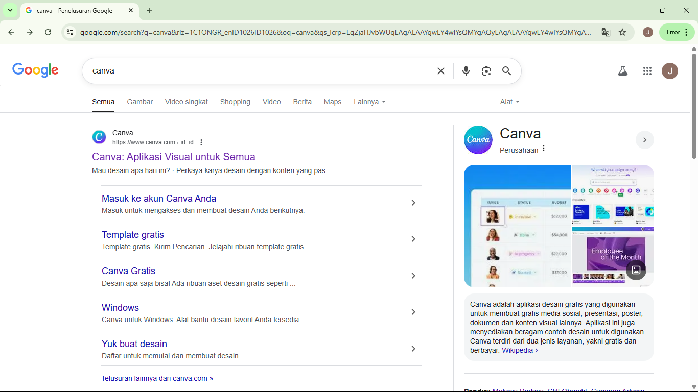Pilih Masuk di halaman awal situsnya, atau pilih Daftar jika Anda belum memiliki akun Canva. Anda dapat mendaftar dengan akun Google, Facebook, atau alamat email.
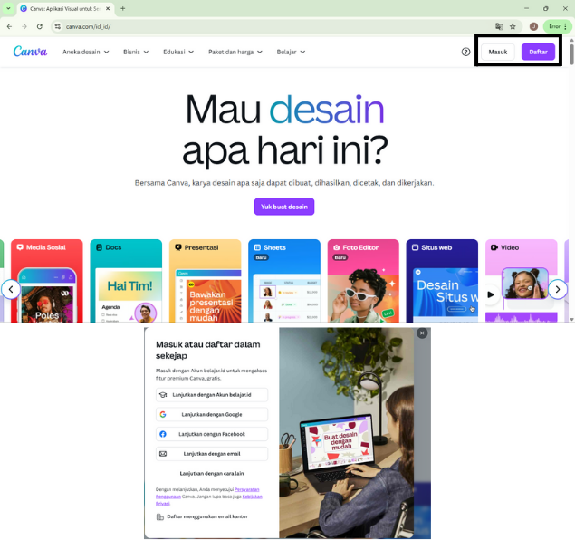Masukan alamat Gmail anda atau pilih account anda seperti gambar dibawah ini.
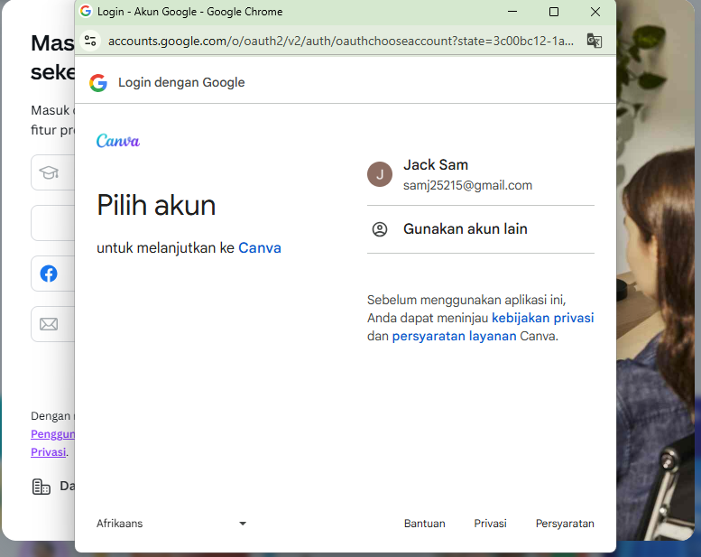Cara Membuat Desain di Canva
Setelah akun Canva Anda dibuat, Sebelum memasuki halaman utama aplikasi, anda akan diarahkan ke halaman informasi untuk memberikan rekomendasi jenis atau template desain sesuai dengan claster anda.
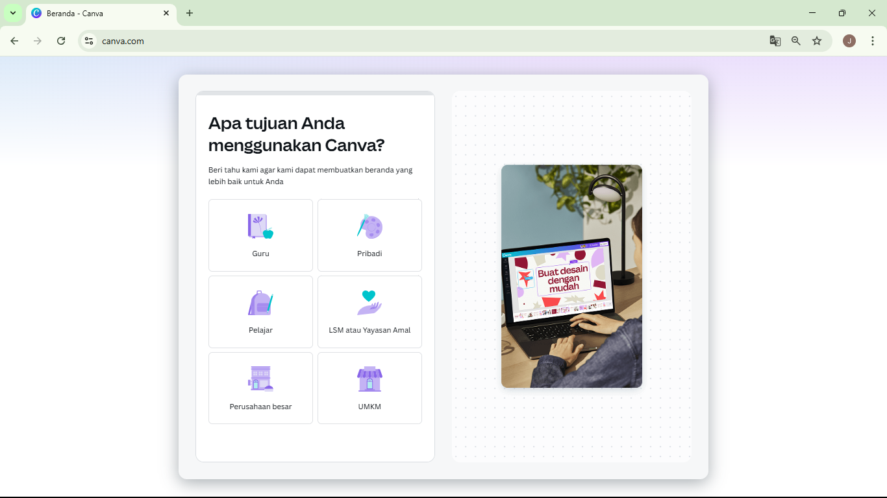Langkah berikutnya dalam cara menggunakan aplikasi Canva adalah, klik Create a Design dan pilih ukuran kanvas yang Anda inginkan seperti di bawah ini.
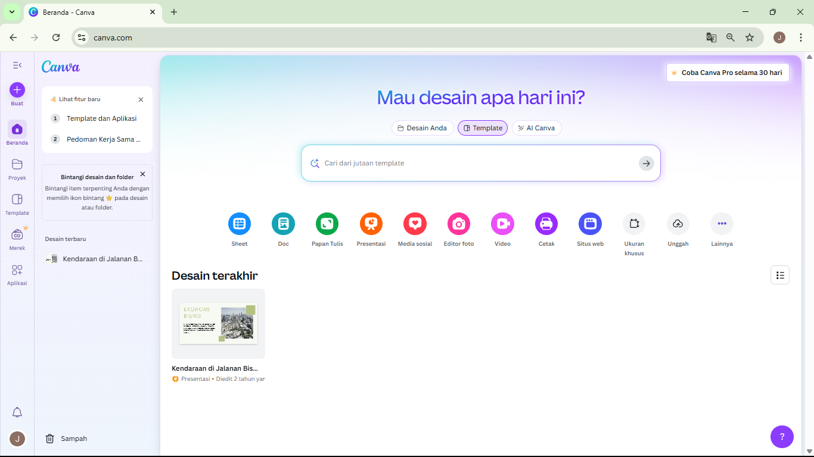Di Canva, Anda juga bisa menggunakan template gratis maupun berbayar untuk berbagai jenis konten.
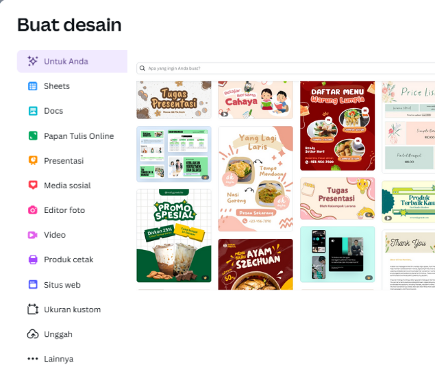Bagian 2: Cara Membuat Desain Promosi
B. Cara Menggunakan Canva untuk Membuat Desain Promosi
Pilih Create(+) lalu memilih ukuran kertasnya adalah A4 tinggal ketik A4 dipencarian canva.
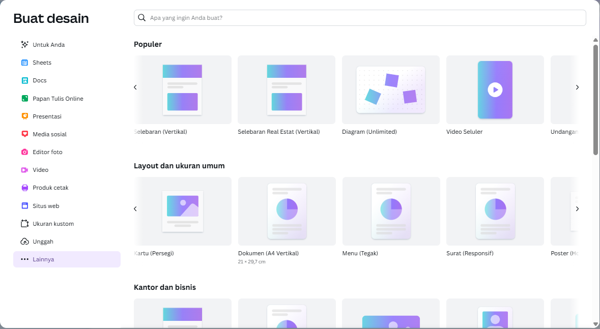pilih template yang ingin dipakai di pencarian.
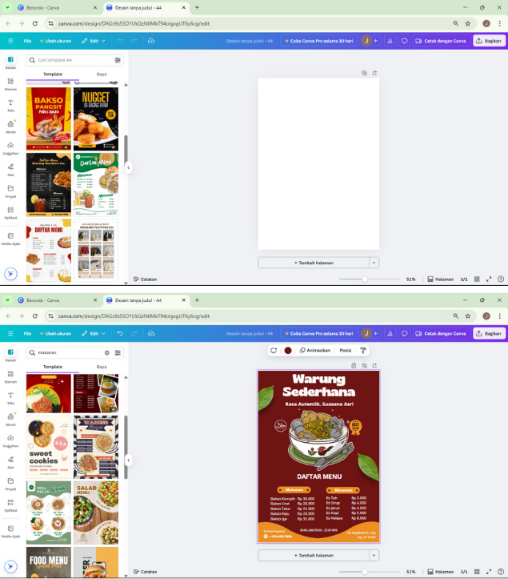Untuk menghapus gambar atau elemen yang ada di template, langsung pilih elemennya dan tekan tombol delete atau backspace di keyboard Anda Memodifikasi poster di Canva juga sangat praktis. Anda bisa menambahkan gambar di poster melalui menu Elements dan Uploads.
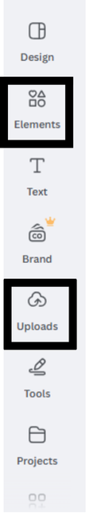Anda bisa juga menambahkan Text atau mengganti Text di poster melalui menu Text.
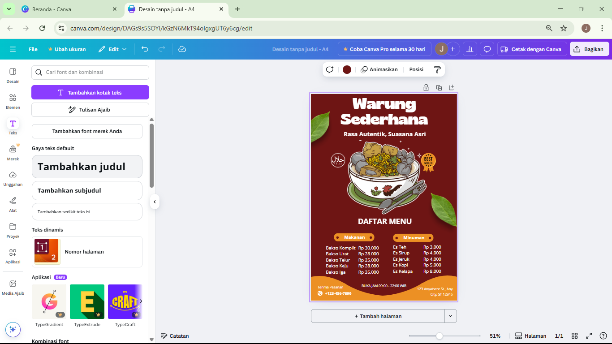Anda bisa juga menambahkan Tulisan secara manual dengan berbagai jenis alat tulis pada poster melalui menu gambar.
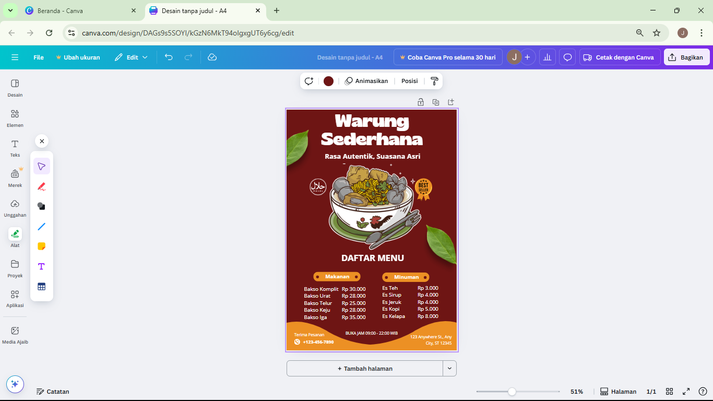Canva juga memungkinkan Anda memodifikasi warna atau gambar untuk background, hanya dengan mengklik area background dan melakukan kustomisasi dengan berbagai tool yang ada di sidebar atau menu bar.
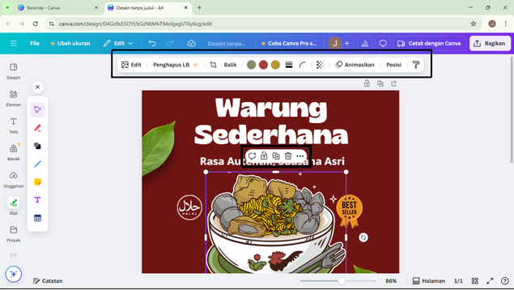Agar poster terlihat lebih menarik, Anda bisa membuat tipografi untuk poster di Canva. Anda dapat menambahkan text box baru atau memilih template tipografi di menu Text > Font Combinations.
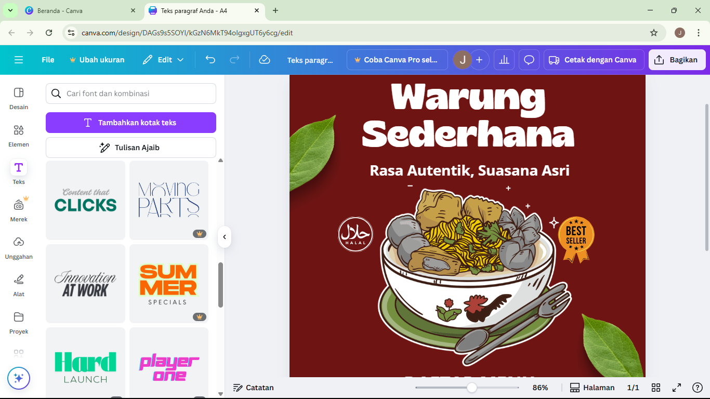Nah, setelah selesai membuat desain nya di Canva, jangan lupa untuk menyimpan desain Anda atau membagikannya.
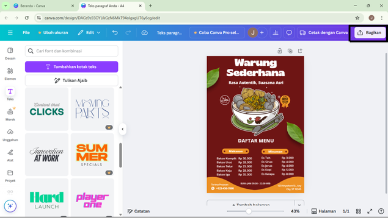Menyimpan dan Membagikan Desain
Nah, setelah selesai membuat desain nya di Canva, jangan lupa untuk menyimpan desain Anda atau membagikannya. Klik tombol "Bagikan" (Share) di pojok kanan atas, lalu pilih "Unduh" (Download) untuk menyimpan hasil desain Anda.
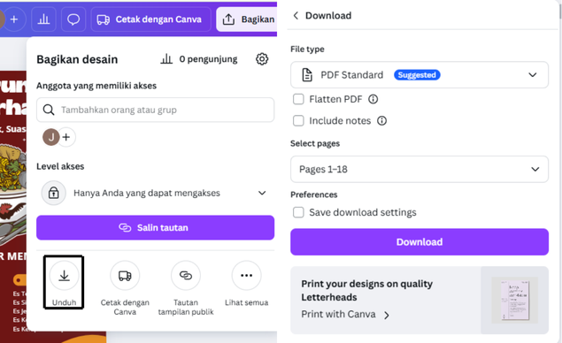Anda juga dapat memilih jenis file dan halaman mana saja yang ingin diunduh.